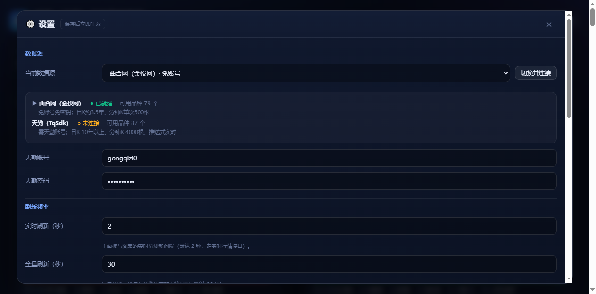
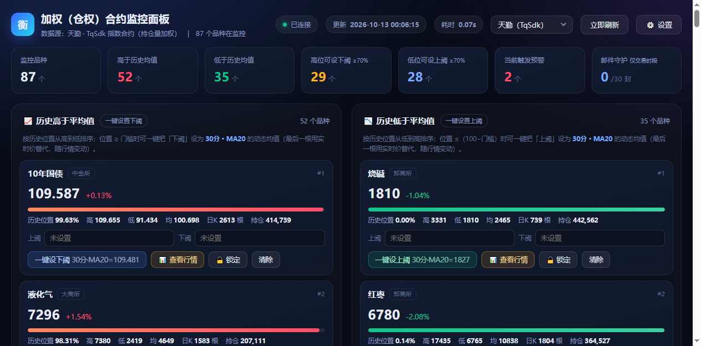
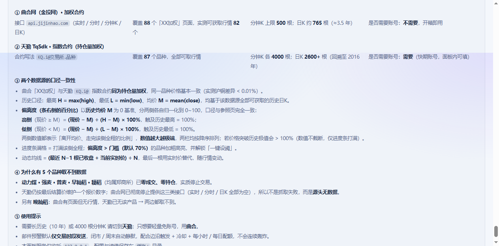

详细使用说明
本文档与仓库内
说明.md 内容一致，HTML 版便于在线浏览与分享。
仓库地址：https://github.com/chenzhuanxin/futures-weighted-panel1. 快速开始
方式 A：单文件 EXE（推荐给最终用户）
- 从 Releases 下载
futures-weighted-panel-v1.0.0-win64.exe（约 94 MB）。 - 双击运行。单文件 EXE 需先自解压，约 5~10 秒后才弹出黑色控制台窗口，属正常现象。
- 启动后自动打开浏览器，默认地址
http://127.0.0.1:8689； 端口被占用会自动改用 8690、8691…，以控制台打印的地址为准。 - 首次启动需 20~60 秒预热（拉取全部品种历史日K），预热完刷新即可。
- 关闭：直接关掉控制台窗口，或窗口内按
Ctrl+C。
✅ EXE 默认数据源为曲合网（免账号、免密钥，82 个品种有行情，日K 约 3.5 年）—— 双击就有数据。
方式 B：源码运行
下载 源码包 ZIP 解压，然后：
# Windows：直接双击
启动看板.bat
# 或命令行
python 服务端.py # 默认 8689 端口，自动打开浏览器
python 服务端.py --port 8888 # 指定端口
python 服务端.py --no-browser # 不自动开浏览器⚠️ 源码运行只需 Python 3.9+ 标准库；仅当使用天勤数据源时才需要
pip install tqsdk。2. 界面总览

| 区域 | 说明 |
|---|---|
| 顶栏左侧 | 数据源下拉（曲合网 / 天勤）、邮件守护状态位（仅交易时段 / 全天、今日已发、排队数） |
| 顶栏右侧 | 🌙 深蓝模式 / ☀️ 浅色模式 切换、⚙️ 设置、手动刷新 |
| 左栏「历史高于均值」 | 按偏离度从高到低排序；可一键把下阈设为所选周期的动态均线 |
| 右栏「历史低于均值」 | 按偏离度从高到低排序；可一键把上阈设为所选周期的动态均线 |
| 卡片条 | [进度条] [偏离度%]，偏离度 > 门槛时百分比加粗高亮并解锁一键设阈 |
| 卡片标签 | ⚠ 已触发（价格在阈值外）；闭市且已设阈时追加 🌙 休市·静默 |
| 底部折叠区 | 数据源说明（默认折叠）与设计署名 |
3. K 线图交互
每张卡片右下角 📊 查看行情 → 弹出图表，五个周期页签：分时 / 5分 / 15分 / 30分 / 日K。

缩放 / 平移 / 重置
| 操作 | 方式 |
|---|---|
| 缩放 | 鼠标滚轮；或工具条 ＋ / − |
| 平移 | 按住图表拖动；或工具条 全览 / 最新 |
| 重置 | 双击图表 |
全量数据：图表一次性取回该周期全部 K 线后再在本地切片缩放，因此缩放/平移到任意位置都不需要重新请求。 实测视口可从 220 根缩到 55 根，曲合日K 765 根、天勤日K 2614 根均可完整浏览。
十字光标与均线开关
- 十字光标悬停 → 显示开 / 高 / 低 / 收 / 涨跌幅 / 成交量（分时图另显示均价）。
- 图例上的
MA5MA8MA10MA20MA30MA50色块点击即显隐。 - 卡片按钮上会直接显示本次基准值，如
15分·MA20=110425.8。 - 设定阈值后，图上会画出上阈黄虚线 / 下阈青虚线及数值标签。
数据上限
| 周期 | 曲合网 | 天勤 | 备注 |
|---|---|---|---|
| 分时 | 当日全部（约 145 点） | 当日全部 | — |
| 5 分 | 500 根 | 4000 根 | 曲合为接口硬上限，图表会提示 limitHit |
| 15 分 | 427 根 | 4000 根 | — |
| 30 分 | 221 根 | 4000 根 | — |
| 日 K | 765 根 | 2614 根 | 曲合自 2023/08 起，天勤自 2016/01 起 |
⚠️ 曲合网分钟 K 单次硬上限 500 根（
pageSize 参数无效）。需要更长分钟历史请切到天勤源。4. 数据源切换
在顶栏下拉或 ⚙️ 设置 → 数据源 中切换即可。
| 数据源 | 账号 | 加权口径 | 优点 | 缺点 |
|---|---|---|---|---|
| 曲合网（金投网） | 免账号 | JO_xxxxxx 加权合约 | 秒开、无会话问题 | 日K 仅约 3.5 年；分钟K 单次上限 500 根 |
| 天勤 TqSdk | 需快期账号 | KQ.i@交易所.品种 指数合约 | 日K 10 年+、分钟K 4000 根、推送式 | 需账号、首连较慢 |
切换耗时实测：切曲合约 1 秒（缓存命中）；切天勤约 18~35 秒（首连）。两者口径一致，切换后历史 H/L/M 自动按新源重算。

5. 阈值基准（上阈 / 下阈）
一键设阈 = 所选周期 K 线、最近 N 根的动态均值，其中最后一根用当前实时价替代，因此每个 tick 都在变。
| 位置 | 操作 | 含义 |
|---|---|---|
| 左栏「历史高于均值」 | 一键设下阈 | 价格从上方跌破该均值 → 触发下阈预警 |
| 右栏「历史低于均值」 | 一键设上阈 | 价格从下方升破该均值 → 触发上阈预警 |
- 可选周期：5 分 / 15 分 / 30 分 / 日K；可选均线参数：MA5 / 8 / 10 / 20 / 30 / 50
- 偏离度 > 门槛（默认 70%）按钮才可点，与参照网页逻辑完全一致（
pct > 70） - 实测：15分K·MA20 → 110425.8；5分K·MA8 → 110480.125；日K·MA5 → 109933.6

6. 偏离度百分比
卡片结构（与参照网页一致）：
[进度条 flex:1] [92.05%]
bar-container percent-label计算口径以「历史均价 M」为 0 基准，高低两侧各自归一化到 0~100：
| 侧 | 条件 | 公式 | 满格含义 |
|---|---|---|---|
| 高侧 | 现价 ≥ M | (现价 − M) ÷ (H − M) × 100% | 触及历史最高 H = 100% |
| 低侧 | 现价 < M | (现价 − M) ÷ (L − M) × 100% | 触及历史最低 L = 100% |
- 两侧数值都表示「离开均价、走完该侧全程的比例」，越大越极端；两栏均按降序排列
- 其中 H = max(high)、L = min(low)、M = mean(close)，均基于该数据源全部可获取的历史日K
- 价格突破历史极值时会 > 100%（数值不截断，仅进度条打满
min(100, pct)） - 偏离度 > 门槛（默认 70%）→ 右侧百分比加粗高亮 + 解锁「一键设阈」
- 百分比文字粗体 17px、最小宽度 74px 右对齐，随
/api/tick实时就地重算（不重绘 DOM）
✅ 口径已与参照网页逐条比对：抓取其实时渲染的 87 条数据反算，87/87 完全吻合。
旧版公式（
(现价 − L) ÷ (H − L) 的全局位置）已废弃 —— 与参照网页对照，平均偏差达 31 个百分点。
如需全局位置，接口仍返回 position 字段备用。7. 预警与防轰炸守护
- 触发条件：实时价上穿上阈 或 下穿下阈
- 表现：卡片红色高亮 + 提示音 + 邮件（卡片式 HTML，含阈值基准说明）
7.1 为什么需要守护
早期版本是「每轮刷新只要价格在阈值外就发信」，配合默认 120 秒冷却，会产生三类骚扰：
| 场景 | 旧行为 | 后果 |
|---|---|---|
| 价格突破后长期停在阈值外 | 每 120 秒重复发一封 | 一天最多 720 封 |
| 收盘后 / 周末 / 假期 | 收盘价仍在阈值外，照发不误 | 整夜 + 整个周末连续轰炸 |
| 多阈值 + 行情普涨/普跌 | 几十个品种各自计时 | 邮件互相叠加 |
7.2 现在的五层防护
| 层 | 机制 | 作用 |
|---|---|---|
| ① 边沿触发 | 只有「从阈内穿到阈外」的那一刻才算一次事件；持续停在阈值外不重发 | 一次突破只发一封 |
| ② 滞回复位 | 必须回落超过「上阈 ×(1−幅度)」才复位（默认 0.3%），之后再次突破才算新事件 | 滤掉阈值边缘的来回抖动 |
| ③ 交易时段门禁 | 闭市期间完全不发信；且闭市期间不置位触发态，开盘首轮若仍在阈值外会补发一封 | 解决整夜 / 周末轰炸 |
| ④ 同品种冷却 | 同品种同方向默认 600 秒内最多一封 | 兜底限频 |
| ⑤ 全局配额 | 每小时 ≤ 6 封、每天 ≤ 30 封；超出转排队等待，不丢弃 | 上限兜底 |
另有 ⑥ 启动基线：重启服务端时，首轮只登记「当前谁在阈值外」，默认不补发，避免「一开就炸」。
7.3 交易时段怎么判断（双源通用、零维护）
优先级从高到低，任一条成立即视为「交易中」：
- 交易所状态：曲合返回的
status == 100 - 行情数据新鲜度（最可靠）：距最后一笔行情 ≤ 300 秒（可配）—— 行情时间戳天然就是最新交易时刻，闭市即冻结， 因此自动适配：同一交易所内不同品种的夜盘差异（沪铜到 01:00 / 螺纹钢到 23:00）、夜盘规则历次调整、周末与法定节假日
- 交易所时段表：仅在前两条都取不到时兜底
📌 实测（2026-10-13 00:00 周一）：沪铜 / 沪银 / 原油 → 开市（夜盘进行中）；螺纹钢 / 铁矿石 / 纯碱 → 闭市（夜盘 23:00 已结束）；碳酸锂 / 多晶硅 / 沪深300 → 闭市（无夜盘）。
7.4 面板上怎么看
- 顶栏 邮件守护 状态位：显示「仅交易时段 / 全天」、今日已发数、排队数
- 卡片标签：
⚠ 已触发；闭市且已设阈时追加🌙 休市·静默（悬停看具体原因） - ⚙️ 设置 → 预警 · 防轰炸守护 底部有实时统计：闭市静默 / 冷却抑制 / 配额抑制 / 队列丢弃次数， 以及「最近为什么没发信」和「最近发信记录」


✅ 实测对比：沪铜（开市）上阈 110000、现价 110429 → 发出 1 封；螺纹钢（闭市）上阈 3000、现价 3083 → 静默不发。
服务端重启后沪铜持续停在阈值外 10 分钟，一封都没发（旧版会发 5 封）。
8. 设置面板全参数
全部落盘到 缓存/配置.json。
| 分区 | 可配置项 |
|---|---|
| 数据源 | 当前源、天勤账号 / 密码、切换并连接 |
| 显示模式 | theme = light（白色背景，默认）/ dark（深蓝背景） |
| 刷新频率 | 实时刷新秒（默认 2）、全量刷新秒（默认 30） |
| 阈值基准 | 计算周期（m5 / m15 / m30 / d）、均线参数（5/8/10/20/30/50）、一键设阈门槛 |
| K 线 | 默认展示的均线（6 选多） |
| 预警 · 防轰炸守护 | 邮件冷却秒、声音开关、仅交易时段发信、仅新突破发一次、滞回复位幅度 %、行情陈旧阈值秒、每小时上限 / 每天上限、启动时补发存量触发 |
| 邮件 | 启用开关、SMTP 主机、端口 / SSL、发件账号、授权码、发件人名称、收件人、抄送 |
守护相关配置项一览
| 键 | 默认 | 说明 |
|---|---|---|
mailTradingOnly | true | 闭市不发信 |
mailEdgeOnly | true | 仅边沿触发发信 |
mailOnStart | false | 启动首轮是否补发存量触发 |
mailCooldown | 600 | 同品种同方向冷却（秒） |
mailReleasePct | 0.3 | 滞回复位幅度（%） |
mailStaleSec | 300 | 行情超时视为闭市（秒） |
mailMaxPerHour | 6 | 每小时全局上限（0 = 禁止发信） |
mailMaxPerDay | 30 | 每天全局上限 |
mailQueueTTL | 1800 | 被限流触发的排队有效期（秒） |
若你希望「任何时段都发」：关闭「仅交易时段发信」即可恢复全天监控（但边沿 + 冷却 + 配额仍生效）。
9. 显示模式与页脚
| 项 | 说明 |
|---|---|
| 默认 | 浅色 / 白色背景（data-theme="light"），首次打开即是 |
| 切换 | 顶栏「🌙 深蓝模式」⇄「☀️ 浅色模式」一键互切 |
| 落盘 | 写入 缓存/配置.json 的 panel.theme，同时写 localStorage["qb_theme"]（<head> 内联脚本在首屏渲染前应用，无闪烁） |
| Canvas 同步 | 图表配色有 C_LIGHT / C_DARK 两套（K线涨跌、均线、网格、坐标轴、阈值虚线、十字光标、成交量、渐变填充、空状态文字），切主题即重绘 |
| 底部数据源说明 | 原生 <details> 折叠面板，默认折叠；展开可见两源接口、覆盖数量、K线上限、口径一致性、公式、无数据品种原因 |
| 设计署名 | 设计：公歧子 微信：gongqizi0 |

10. 邮件配置示例
以 126 邮箱发到 QQ 邮箱为例（⚙️ 设置 → 邮件）：
| 字段 | 示例值 | 说明 |
|---|---|---|
| SMTP 主机 | smtp.126.com | 按邮箱服务商填写 |
| 端口 | 465 | SSL 勾选时为 465，非 SSL 常用 587 |
| SSL | 勾选 | — |
| 发件账号 | yourname@126.com | 完整邮箱地址 |
| 授权码 | ******** | 不是登录密码，需在邮箱设置里单独开启 SMTP 并生成 |
| 发件人名称 | 加权合约监控 | 邮件里显示的名称 |
| 收件人 | someone@qq.com | 可多个 |
🔒 账号安全：所有账号与授权码只保存在本机
缓存/配置.json，
不会上传到任何服务器，也不会被提交进本仓库（仓库已用 .gitignore 排除 缓存/）。11. 常见问题
| 现象 | 原因与解决 |
|---|---|
| 浏览器没自动打开 | 手动访问控制台里打印的地址（http://127.0.0.1:8689） |
| 面板一直显示「预热中」 | 天勤源首次连接较慢（30~60 秒），再等一会儿并刷新 |
| 天勤提示「tqsdk 不可用」 | 源码运行需 pip install tqsdk；或设置面板里没填账号。只想要数据就切回「曲合网」 |
| 曲合某品种无数据 | 该品种为已停止挂牌的「僵尸品种」（零成交零持仓），曲合侧无行情 —— 详见 数据源说明 · 覆盖差异 |
| 分钟 K 只有 500 根 | 曲合网接口硬上限。需要更长历史请切天勤源 |
| 杀毒软件报毒 | PyInstaller 单文件 EXE 的常见误报，加入信任即可（源码在同仓库，可自行执行 打包exe.py 核对重建） |
| EXE 双击后要等很久 | 单文件 EXE 需先自解压，约 5~10 秒出现控制台窗口属正常 |
| 端口 8689 被占用 | 自动避让到 8690、8691…，以控制台打印的地址为准 |
| 配置放在哪 | EXE 版在 EXE 同级的 缓存\；源码版在项目 缓存\。EXE 拷到哪配置就跟到哪 |
12. 重新打包 EXE
C:/Python314/python.exe 打包exe.py :: 产物 → 发布\加权合约监控面板.exe（约 94 MB）用 PyInstaller 6.22.3 + Python 3.14 打包，--onefile --console，内置 tqsdk / pandas / numpy / scipy 全量依赖。
| 关键处理 | 做法 |
|---|---|
| 动态导入的中文模块 | 服务端.py 用 importlib.import_module("品种表")，静态分析扫不到 → 必须
--hidden-import 品种表 数据源 邮件预警 天勤行情 曲合行情 |
| 只读资源 vs 可写数据 | 看板.html 走 --add-data 打进 EXE（运行时在 sys._MEIPASS）；
配置与缓存改由 _data_dir() 决定 = EXE 所在目录 |
--add-data 必须绝对路径 | 同时用了 --specpath build 时，相对路径会以 spec 目录为基准 → Unable to find 看板.html |
不能排除 pydoc / scipy | 实测 import tqsdk 会连带导入二者；排除后 from tqsdk import TqApi 抛异常并被误报成「未安装 tqsdk」 |
| 账号不进 EXE | 缓存/ 不打进包，EXE 本体零敏感信息，可安全分发 |
✅ 打包后实测：曲合源 82 品种正常；天勤源登录成功、174 个合约订阅、87 品种数据齐全。
相关文档：详细数据源说明 · GitHub 仓库 · Release 下载